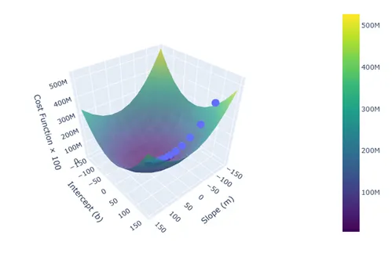
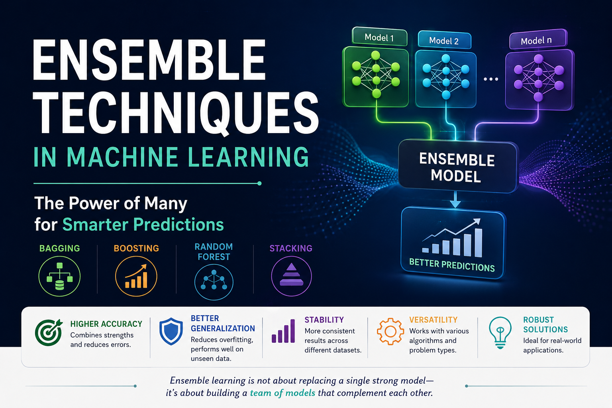
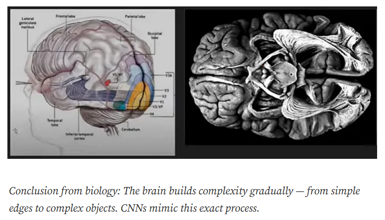
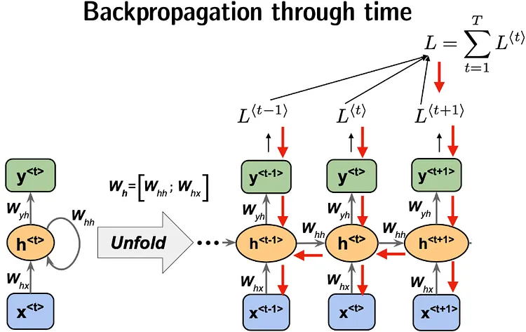
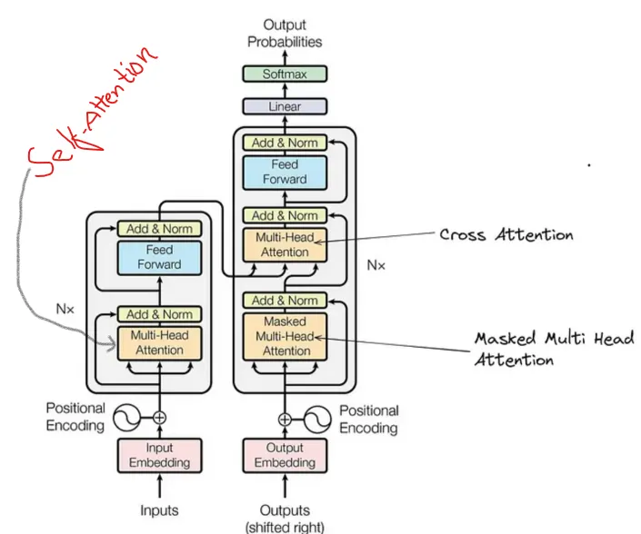

Machine Learning · Optimization
Ideas & notes
Clear explanations, research notes, and lessons from studying and building intelligent systems.

Machine Learning · Optimization

MACHINE LEARNING · ENSEMBLE LEARNING

Neural Networks · CNNs
Machine Learning

Deep Learning (RNN)

Understanding Transformers: DL
Data Science · Statistics
Deep Learning · NLP

Neural Networks · Draft

Applied Machine Learning · Draft